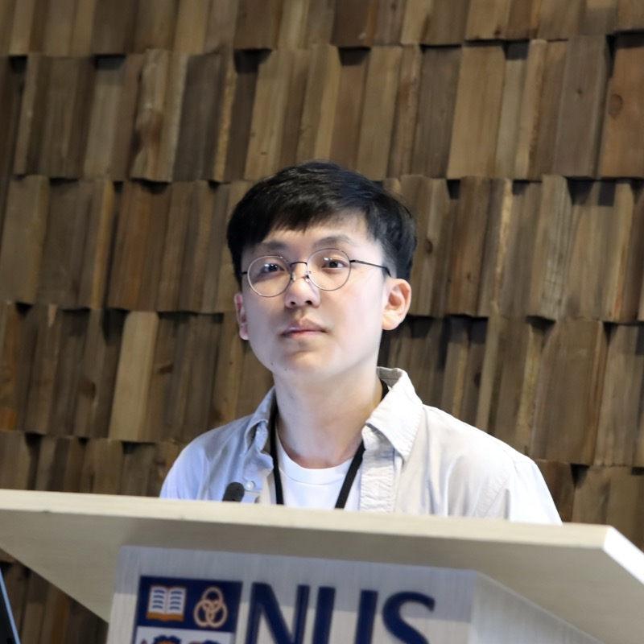

Xufeng Duan
段旭峰
I am a Research Assistant Professor in the Language Processing Lab at the Brain and Mind Institute, The Chinese University of Hong Kong (CUHK).
My research connects human language production and large language models. I combine behavioral, EEG, and fMRI data with computational methods to study the mechanisms of language, and use mechanistic interpretability to understand how computations such as syntax and prediction emerge inside LLMs.

Curated Research

Do Large Language Models Acquire Phrase-Based Processing?
Eye tracking, fMRI, and model–brain alignment show phrase-level processing in LLMs and stronger alignment after phrase-segmentation fine-tuning.
10.18653/v1/2026.scil-main.44
Unveiling Language Competence Neurons: A Psycholinguistic Approach to Model Interpretability
Identifying interpretable units in large language models aligned with psycholinguistic effects, bridging model neurons and human linguistic competence.
2025.coling-main.677
MacBehaviour: An R package for behavioural experimentation on large language models
An open-source R toolkit to help researchers quickly set up behavioral experiments interacting with LLMs, either locally or in the cloud.
10.3758/s13428-024-02524-yAcademic Service
Journal Reviewing
I serve as a reviewer for journals spanning NLP and artificial intelligence, and neuro/cognitive science.
NLP / Artificial intelligence
- Computational Linguistics
- IEEE Intelligent Systems
- IEEE Transactions on Affective Computing
- International Journal of Applied Linguistics
- Journal of Language Modelling
- Information Sciences
- Data
- Applied Artificial Intelligence
- International Journal of Human-Computer Interaction
Neuro/cognitive science
- PLOS ONE
- Behavior Research Methods
- Psychology Communications
- Cognitive Science
- Journal of Neurolinguistics
- Acta Psychologica
- Cognitive Processing
- Social Sciences & Humanities Open
Community Outreach
Alongside my research, I try to contribute to the Chinese academic community to share new methods and theories. With my colleagues, I initiated a 计算神经语言学, Computational Neurolinguistics) that shares research article commentaries in Chinese. I also run the Computational Neurolinguistics Forum, which has hosted several invited speakers.
Conference / Workshop Committee
Program Committee member for the 2nd Workshop on LLM Agents for Social Simulation (LASS 2026), co-located with ACM CIKM 2026.
Supervision and Mentorship
I co-supervise PhD students with Prof. Zhenguang G. Cai, working on psycholinguistics, large language models, and cognitive neuroscience.
| Name | Role & affiliation |
|---|---|
| Bei Xiao | PhD Student, co-supervised with Prof. Zhenguang G. Cai, The Chinese University of Hong Kong. CUHK PhD Studentship. (Will visit the Ted Lab at MIT in 2027.) |
| Zhaoqian Yao | PhD Student, co-supervised with Prof. Zhenguang G. Cai, The Chinese University of Hong Kong. |
| Beijia Kan | PhD Student, co-supervised with Prof. Zhenguang G. Cai, The Chinese University of Hong Kong. |
Publications
Total: Loading... publications • Auto-generated from bibliography
Loading publications...
Conference Talks
- Xufeng Duan, Zhaoqian Yao, Yunhao Zhang, Shaonan Wang, & Zhenguang Cai. (2026). How syntax specialization emerges in language models. Paper presented at the 39th Annual Conference on Human Sentence Processing, Cambridge, MA, United States.
- Xufeng Duan. (2024). MacBehaviour: An R package for behavioural experimentation on large language models. Paper presented at Architectures and Mechanisms for Language Processing Asia (AMLaP Asia), Singapore.
- Xufeng Duan. (2024). The neural basis of decline in written production: Evidence from Chinese handwriting. Paper presented at the Annual Meeting of the Society for the Neurobiology of Language, Brisbane, Australia.
- Xufeng Duan. (2024). Humanlike language use in LLMs. Talk presented at the CogSci Hong Kong Meetup, Hong Kong, China.
- Xufeng Duan. (2023). Chinese translations of English words: A comparison between human and ChatGPT translations. Paper presented at Architectures and Mechanisms for Language Processing Asia (AMLaP Asia), Hong Kong, China.
- Zhenguang Cai, Xufeng Duan, Lu Sun, & Martin Pickering. (2023). Structural priming in ChatGPT. Paper presented at Architectures and Mechanisms for Language Processing Asia (AMLaP Asia), Hong Kong, China.
- Zhenguang Cai, Xufeng Duan, David Haslett, Shuqi Wang, & Martin Pickering. (2023). Do language models resemble humans in language use? Paper presented at Architectures and Mechanisms for Language Processing (AMLaP), Donostia-San Sebastián, Spain.
- Zhuang Qiu, Xufeng Duan, & Zhenguang Cai. (2023). Does ChatGPT resemble humans in processing implicatures? Paper presented at the 4th Natural Logic Meets Machine Learning Workshop, Nancy, France.
- Xufeng Duan. (2018). Language rehabilitation training therapies for Chinese aphasia: Using Chinese characters as clues. Paper presented at Beyond a Limited Scope: Chinese for Specific, Academic, and Professional Purposes, Honolulu, HI, United States.
- Xufeng Duan. (2018). The dependence on different symbolic systems during word recognition–pronunciation tests by Chinese native speakers with aphasia: Evidence from eye-tracking. Paper presented at the Annual Conference of the Chinese Society of Neurological Linguistics, Xuzhou, China.
- Xufeng Duan. (2018). The rules of prominence and locality: Psychological reality. Paper presented at the Annual Academic Conference of the Chinese Linguistic Society, Guangzhou, China.
Poster Presentations
- Xufeng Duan, Bei Xiao, Beijia Kan, & Zhenguang Cai. (2026). StimMAS: A multi-agent framework for automated linguistic stimulus construction in psychological research. Poster presented at the 39th Annual Conference on Human Sentence Processing, Cambridge, MA, United States.
- Zhenguang Cai, Xufeng Duan, Lu Sun, & Martin J. Pickering. (2026). Do syntax-like representations emerge in LLMs? Evidence from structural priming. Poster presented at the 39th Annual Conference on Human Sentence Processing, Cambridge, MA, United States.
- Yichi Zhang, Xufeng Duan, & Zhenguang Cai. (2024). The causal role of left inferior frontal gyri in Chinese character handwriting: A transcranial magnetic stimulation study. Poster presented at the Annual Meeting of the Society for the Neurobiology of Language, Brisbane, Australia.
- Zhuang Qiu, Xufeng Duan, & Zhenguang Cai. (2024). Do large language models resemble humans in grammaticality judgment? Poster presented at the Annual Conference on Human Sentence Processing, Ann Arbor, MI, United States.
- Xufeng Duan, Zhenguang Cai, & Bo Yao. (2023). Electrophysiological responses associated with character amnesia in Chinese handwriting. Poster presented at Architectures and Mechanisms for Language Processing (AMLaP), Donostia-San Sebastián, Spain.
- Hanlin Wu, Xufeng Duan, & Zhenguang Cai. (2023). Belief of speakers' linguistic competence modulates the N400 effect elicited by inconsistent lexical use. Poster presented at Architectures and Mechanisms for Language Processing (AMLaP), Donostia-San Sebastián, Spain.
- Zhuang Qiu, Xufeng Duan, Zhenguang Cai, & Nan Zhao. (2023). Pragmatic implicature processing in ChatGPT. Poster presented at Architectures and Mechanisms for Language Processing (AMLaP), Donostia-San Sebastián, Spain.